现在，我们就运用二次方程来解决一些具体问题．如商品定价问题，就属于二次方程问题．
假如我们是商店的老板，有一种商品的进价是20元，如果一分钱不赚地卖出去，每个月最多能成交1000单，但这样肯定不赚钱；然后我们就要提高价格，假设每提高1元钱，就会少来100个人，请问应该如何定价才能保证每个月赚2100元呢？
下面我们就来尝试解决这个问题．假设利润是x 元，因为每增加1元钱，就少100个客户，所以当利润是x 元的时候，就会少来100x 个人，那原来最多有多少人呢？有1000个；现在的客户数呢？就是1000－100x ．同时，因为每件商品的利润是x 元，所以每个月的总利润就是（1000－100x ）x ，它等于多少呢？我们希望每个月赚2100元，当然它就等于2100了．这样我们就列出了方程式：（1000－100x ）x ＝2100．
那这个方程怎么求解呢？首先我们把方程化简一下，先把方程左右两边除以100，得到（10－x ）x ＝21，把左侧的乘式展开，得到10x －x 2 ＝21，把21从方程的右侧移到左侧，改为－21，得到10x －x 2 －21＝0，左右两侧除以x 2 的系数－1，把它变成正的，得到x 2 －10x ＋21＝0．
方程简化处理干净了，接下来就对左侧的多项式做分解因式．先用十字相乘法试一试，哪两个数字相加等于－10，相乘等于21呢？3×7＝21，但3和7加起来是10，不是－10，所以应该是－3和－7．于是，我们的方程就变成了（x －3）（x －7）＝0，分别让两个因式等于0，得到当x －3＝0时，x 1＝3，当x －7＝0时，x 2＝7．
方程的两个解意味着什么呢？这就是说无论我们把利润定在3元还是7元，都可以满足每个月赚2100元的任务．验证一下是不是呢？当我们赚3元的时候，客人少来300个，变成了700个，结果是3×700＝2100．当我们赚7元的时候呢，客人少来了700个，变成300人，结果是7×300，同样是2100元．
一元二次方程有两个根是有好处的，它可以让我们的选择更加自由，如果我们想做高端店，就可以把东西卖贵点，把服务提升一点，重点服务那些尊贵的客人；如果你希望为广大人民群众服务，也可以把东西卖便宜点．
至此，悬而未决的定价问题终于得到了解决．这个二次方程还不错，它真能帮我解决具体问题．可是，这个二次方程求解一定要用到因式分解吗，有没有什么更简单通用的办法求解呢？还真有，接下来我们就一起研究一下解决标准一元二次方程的求根公式．学会了求根公式以后，就再也不需要因式分解了，直接把方程的系数代入到求根公式里，方程就迎刃而解．
不过，在解题之前，我们首先要认识一下二次方程的一般形式．什么叫作一般形式呢？就是常见形式、标准形式．换句话说，即便原来的方程的形式与此不同，也可以通过移项、合并同类项转成这样的形式．一个标准的二次方程是由二次项、一次项和常数项三部分组成的．假设二次项系数是a ，一次项系数是b ，常数项是c ，于是就得到了一个这样的标准方程式：a x 2 ＋b x ＋c ＝0．
接下来，用配方法对这个方程式求解．首先，我们要在方程的左右两边同时除以a ，得到
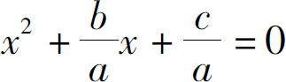
．由于一次项系数是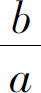
，要想把它配成完全平方公式，那个常数项就得是它的一半的平方．它的一半是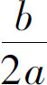
，平方以后就是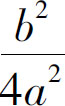
，我们在方程两边都加上一个这样的算式，得到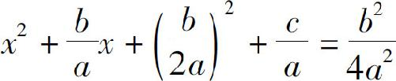
，左边的三项配成完全平方公式，得到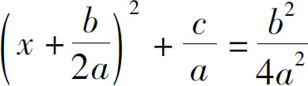
，把左侧的常数项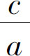
移到右侧，得到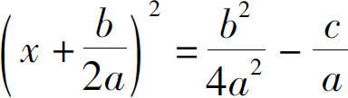
，右侧通分合并，得到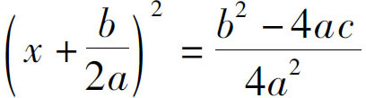
，方程符合一个平方等于一个常数的情况，开方得到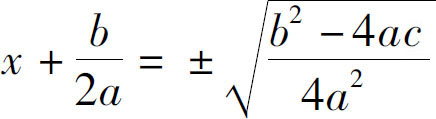
，把右侧根式中的分母开方移到根式外：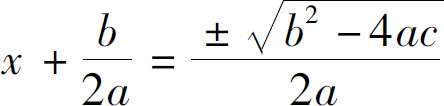
，最后，再把方程左侧的常数项移到右侧，得到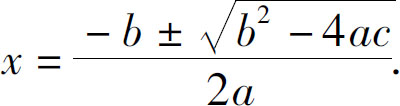
于是，我们终于得到了标准的一元二次方程的求根公式．以后无论遇到什么样的二次方程，只要先把它转换成标准形式，找到与a、 b 、c 对应的系数分别是多少，然后再把系数代入这公式里头，就可以求解．
比如：x 2 ＋5x ＋4＝0这个方程的解是什么呢？我们把它和a x 2 ＋b x ＋c ＝0对比一下发现：二次项系数a ＝1，一次项系数b ＝5，常数项c ＝4，把这三个数代入到求根公式内，就得到x ＝
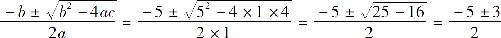
，分解得到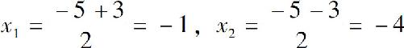
．我们利用二次方程解决了一个定价问题，还一起推导了二次方程的求根公式，只要记住了这个求根公式，即使不懂因式分解，也能对一个二次方程求解了．不过，我们今天求的这个定价问题，并不让人满意，有人会说了，既然这个二次方程这么好用，我们为什么一个月才赚2100元呢，我不能一个月赚个三五千元吗？